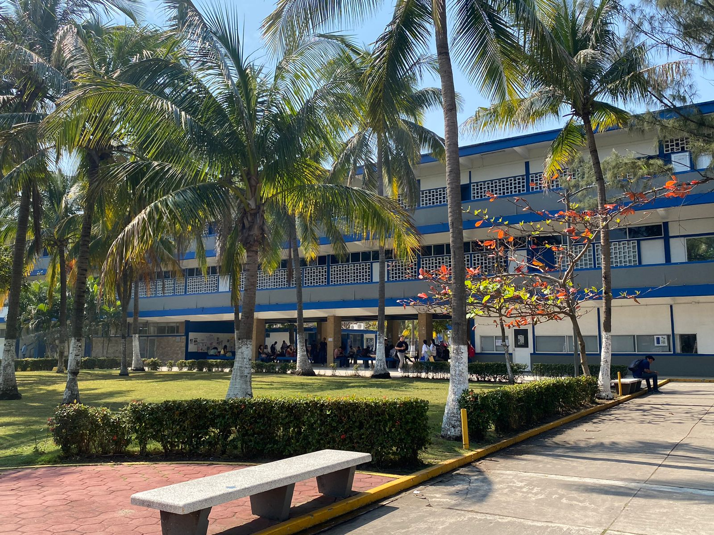

Doctorado
Conviértete en un investigador líder y multiplica tu impacto en ciencia e ingeniería
El Doctorado en Ciencias de la Ingeniería del Tecnológico Nacional de México-Instituto Tecnológico de Veracruz es un programa posgradual diseñado para formar investigadores de alto nivel, capaces de generar conocimiento científico y tecnológico original que responda a desafíos de gran relevancia regional, nacional e internacional.